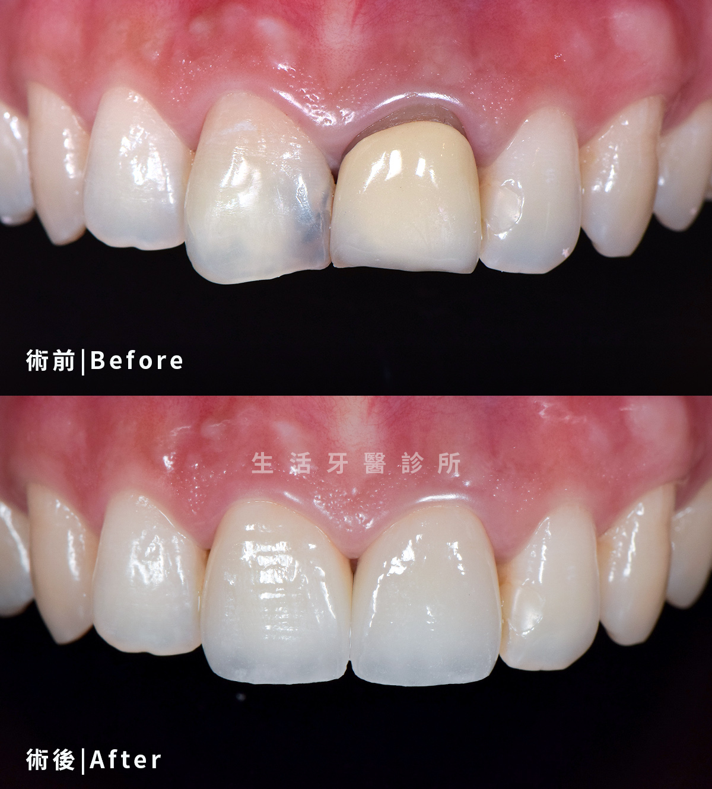

療程項目
牙齒美白Teeth Whitening
在安全評估下提升牙齒明亮度
牙齒美白適合想改善自然牙齒色澤的人，療程前需先檢查蛀牙、牙周、敏感與假牙範圍，確認適合方式與預期效果。
亮白
自然色階
評估
敏感風險
維持
日常照護

療程介紹
了解牙齒美白，選擇合適治療
牙齒美白適合想改善自然牙齒色澤的人，療程前需先檢查蛀牙、牙周、敏感與假牙範圍，確認適合方式與預期效果。
生活牙醫會依照每位患者的口腔條件、期待、預算與長期維護需求，安排完整檢查與醫師說明。療程開始前會先釐清適合對象、可能限制與替代方案，讓治療計畫更透明。
實際治療方式與時間會因牙齒狀況、牙周健康、咬合、生活習慣與全身病史而異，建議以現場醫師診斷為準。

改善外源染色
針對咖啡、茶、菸垢等色素沉積進行評估
保留原牙形態
不改變齒型，主要提升自然牙齒色澤
術前安全檢查
先處理蛀牙、牙齦發炎或敏感問題
維持習慣建議
搭配飲食與清潔調整，延長美白效果
療程流程
從評估到穩定追蹤
每個療程都會先確認口腔基礎條件，再依診斷結果安排合適步驟與回診節奏。
口腔檢查
確認牙齒美白需求、病史與口腔狀況，先建立治療方向。
色階紀錄
收集影像、掃描或口腔紀錄，讓醫師能更完整判斷。
選擇美白方式
依檢查結果說明治療方式、期程、限制與替代方案。
療程執行與敏感觀察
依計畫執行治療，過程中持續確認舒適度與穩定度。
回診追蹤與維持
完成後安排清潔照護與回診追蹤，維持長期成果。
治療比較
治療方式怎麼選
| 項目 | 說明 |
|---|---|
| 牙齒美白 | 適合自然牙色偏黃或外源染色 |
| 陶瓷貼片 | 可同時改善齒色、齒型與縫隙 |
| 洗牙 | 去除牙結石與表面色素，不等同於美白 |
生活牙醫的優勢
專業美白規劃亮白笑容
生活牙醫以德國 flash 美白系統、指定醫師操作與美學規劃，讓牙齒亮度提升更有掌握。

專科口腔醫療團隊
療程前先評估蛀牙、牙周、敏感與修復物狀況，確認適合的美白方式。
德國 flash 美白藥劑
採用德國 flash 美白藥劑，依齒色與敏感度規劃適合的療程設定。
德國冷光美白儀
搭配冷光美白儀進行療程，協助提升美白效率與操作穩定度。
指定醫師完成療程
由指定醫師操作與追蹤，依患者反應調整療程節奏與術後照護。
極緻美學規劃
依膚色、唇色與原始齒色規劃亮度，追求自然不失真的白。
豐富成功案例
透過實際案例了解美白前後變化，協助建立合理期待與維持方式。
實際案例分享
亮白但不失真的自然笑容
牙齒美白會依原始齒色、敏感狀況與修復物位置評估，讓亮度提升同時保留自然協調。

居家美白 × 前牙美學
改善咖啡茶染，提升整體明亮度
針對長期飲食染色造成的齒色暗沉，先評估牙齒與牙齦狀況，再規劃合適的美白與維持方式。

美白 × 色階調整
讓牙齒亮度更接近理想色階
透過術前色階紀錄與口腔檢查，確認自然牙可改善的範圍，讓成果自然融入膚色與唇色。

美白評估 × 微笑設計
先改善齒色，再評估是否需要美學修復
若同時有齒色、齒型與縫隙需求，可先從美白評估開始，再討論貼片或全瓷冠是否必要。
常見問題
牙齒美白療程FAQ
整理諮詢時常見的問題，協助您在看診前先掌握基本方向。
合格療程會先評估口腔狀況並控制藥劑使用方式。若有蛀牙、牙齦退縮或敏感，需先處理再評估美白。
不會。美白主要作用在自然牙齒，既有假牙、樹脂補牙或貼片色澤不會同步變白。
維持時間與飲食、抽菸、清潔習慣和回診保養相關，醫師會依個人狀況提供建議。
開始您的牙齒美白評估
若想改善牙齒暗沉或泛黃，可以先進行口腔檢查與色階評估，選擇合適的美白方式。